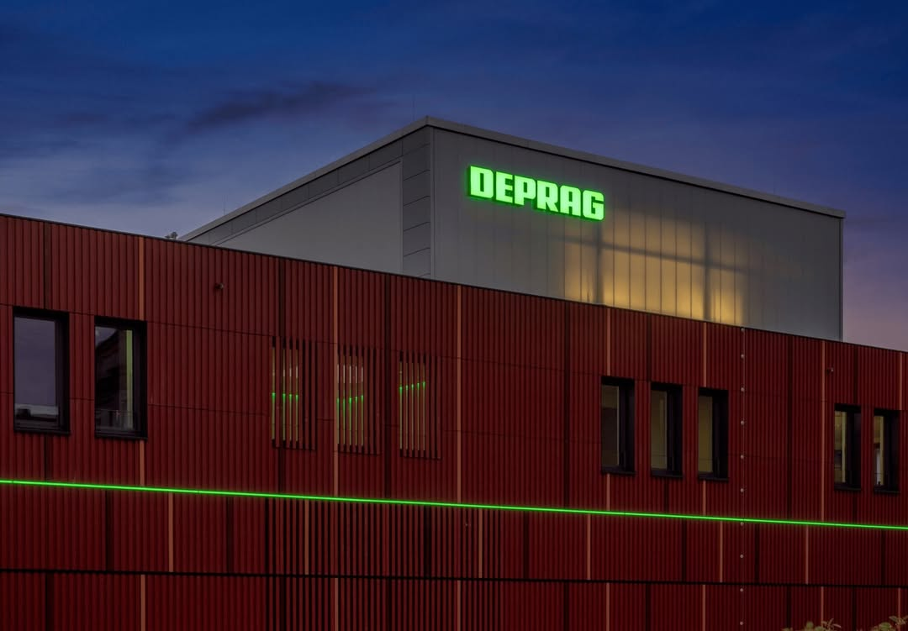

JULY 15, 2026
STORY — JULY 2026
The partnerships behind precision
DEPRAG의 지능형 체결 기술과 WITTENSTEIN alpha의 고정밀 기어박스가 만나 차세대 산업 자동화의 새로운 기준을 만들어갑니다. 독일 엔지니어링의 정수를 한국 제조 현장에 전달하는 Fatec System의 이야기.
Read more →DEPRAG의 지능형 screwdriving·automation 기술과 WITTENSTEIN alpha의 고정밀 motion control 제품을 한국 산업 현장에 통합 제공합니다.
Explore Products →고도의 조립 정밀성과 모션 제어 기술은 오늘날 제조업의 근간입니다. Fatec System은 세계 최고 수준의 제조사들이 더 정밀하고, 더 빠르고, 더 효율적인 장비를 만들 수 있도록 기술을 제공합니다.
See all products →STORY — JULY 2026
DEPRAG의 지능형 체결 기술과 WITTENSTEIN alpha의 고정밀 기어박스가 만나 차세대 산업 자동화의 새로운 기준을 만들어갑니다. 독일 엔지니어링의 정수를 한국 제조 현장에 전달하는 Fatec System의 이야기.
Read more →
DEPRAG + WITTENSTEIN alpha — German engineering delivered to Korean industry
JULY 15, 2026
JUNE 22, 2026
MAY 5, 2026
Precision assembly technology in action
OUR PARTNERS
세계 최고 수준의 정밀 제조 기술 파트너

Screwdriving · Feeding · Automation
1931년 독일에서 시작된 산업용 체결 기술의 글로벌 리더. 토크 0.02–500Nm의 광범위한 screwdriving 시스템과 자동화 솔루션을 제공합니다.
Explore DEPRAG →
Gearboxes · Servo Actuators · Linear Systems
고정밀 서보 기어박스와 모션 제어 시스템의 세계적 리더. simco® drive, cyber® dynamic line 등 혁신적인 제품군으로 정밀한 움직임을 구현합니다.
Explore WITTENSTEIN alpha →Fatec System의 통합 접근 방식은 R&D부터 양산까지 모든 단계에서 제조 공정 최적화를 지원합니다.

0.02–500Nm precision fastening for every application

Automated screw feeding and material handling

Turnkey assembly cells and robotic integration

Low-backlash planetary and servo gearheads

cyber® dynamic line and simco® drive technology

Rack-and-pinion, ball screw, and linear actuators
ENGINEERING SERVICE
요구사항 분석 → 적합성 검토 → 최적 솔루션 매칭
Torque, speed, backlash, service factor 기반 사이징
공정 설계, 통합 검토, technical review
설치, 유지보수, spare parts, service contract
Explore opportunities to develop the technology behind the most precise manufacturing equipment.
Contact Fatec System →